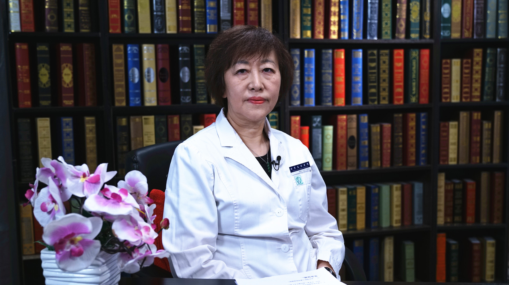

2.16 儿童不安全性依恋¶
崔红 主任医师¶

首都医科大学附属北京友谊医院儿科主任 主任医师 博士生导师；
中国医师协会儿童健康专业委员会副主任委员；中国中西医结合学会儿科专业委员会主任委员；北京医学会儿科学分会副主任委员；北京医师协会儿科医师分会副理事长；《中华儿科杂志》编委；《中华新生儿科杂志》编委。
主要成就： 儿科临床工作34年，救治了大量疑难危重患儿。在国家级多项基金资助下，率领团队开展了大量基础和临床结合的科学研究，使团队科研和临床疾病救治能力大幅提高；主编、主译、审译和参编了多部儿科专著和教科书，发表论文70余篇，其中SCI论文18篇，获发明专利4项。
专业特长： 擅长于儿内科常见病的治疗，新生儿专业，尤其是早产儿脑损伤和危重新生儿的救治。在高危儿的管理、生长发育、儿童保健等相关领域有深入的研究。
什么是儿童不安全性依恋？¶
（采访）什么是儿童安全性依恋？
儿童安全性依恋也就是在婴儿的第一年的后半年，也就是在6-12月的时候，因为母子之间亲密的接触，良好的一种关系的建立，而形成的一种儿童未来的心理健康发育的这样的一个情况。
（采访）有没有在6-12个月期间，母子之间形成不安全依恋？
是可以的，我们刚才谈到了安全性的母子依恋，那么不安全性依恋就是这种关系形成的是不健康的。所说的这种关系形成的不健康，也就是一部分是由于，比如说母子的分离，妈妈因为工作等等各种因素，使得跟孩子过早的分离，或者在相处的过程当中，有一些不科学的方式，所以导致了母子之间形成了一种不安全性的依恋。
那么在这一时期，形成的不安全性依恋最大的一个表现，或者是最突出的表现，就是孩子在幼年的时候会有一种，比如说过度的不安全感，比如说他不容易离开妈妈，总是在黏着父母，不愿意自己在陌生环境当中，去独立的完成一件事，或者是离开妈妈去玩耍。
或者还有一部分孩子可能是表现为，就是对身边的亲人的一种相对漠视，比如说我们有一项实验可以区分这两类孩子，是健康性依恋，还是不健康依恋。我们可以把孩子放在一个相对陌生的环境当中，有一个测试者跟他在一起，那么这个时候让妈妈进入到这个陌生的环境当中，看孩子的反应。
如果是一个安全性依恋，他会马上跟妈妈有一个很亲密的互动，那么互动之后的话，他又可以离开妈妈去正常的玩耍。
如果是不安全依恋的话会有两种表现，那么一种表现可能是妈妈进入到这个环境当中的时候，孩子就跟妈妈确实有一个亲密的互动，但是之后妈妈就不能再离开，就不能够再独立的去玩耍，黏妈妈黏得非常厉害，这是一类。
那么还有一类就是妈妈进来，和妈妈在周围的一些走动，对他没有任何的影响，似乎是一种漠视，所以这两种都是不安全性依恋形成的状态。
那么孩子可能都是在幼年的时候，或者在之前的时候，形成的是一种不安全性的母子依恋。
妈妈白天上班，晚上回家，儿童会形成不安全性依恋吗？¶
（采访）母子长时间分离可能会造成儿童不完全性依恋，这样白天工作，晚上下班回家陪伴孩子会不会造成儿童不安全性依恋呢？
应该不是主要的原因，为什么？比如说我们都知道，如果说一岁之内，能够妈妈全程的很好的去呵护，能够很好的去跟孩子建立一种安全性的健康的关系，是很重要的。
虽然我们说6个月到12个月，这是一个非常重要的时期，但是如果说妈妈在上班之后，能够很好的处理好这种上班，下班，和下班完之后跟孩子的接触，那么是完全可以避免不安全性依恋的形成的。
提醒家长朋友注意的是，在孩子和妈妈做必须的分离的时候，告诉孩子，我什么时候要去做什么，这个规律性，或者是让孩子感到，我不是要把孩子抛弃，因为孩子不懂，只要你离开他，他就有一种不安全感，是不是你要抛弃我的这样一种感觉。
所以这个时候你能让孩子感觉到，我还会定时回来，回来之后还会跟你有玩耍，跟你有接触，跟你有沟通，有交流，尤其是晚上还陪着孩子睡觉，喂奶等等这些其实都是可以避免的，不是说妈妈只要一上班，就完完全全的会导致他一个母子的不安全依恋的形成。
但是如果说妈妈从6-12个月这一期间，或者是更长的时间，那么干脆这一段时间，一个礼拜，甚至一个月都见不到孩子，那么这个时候还是有一定的危险性的。
所以我们不太主张在一岁之内，父母不跟孩子在一起生活，这个可能会有一部分孩子，会导致他不安全依恋的形成。
（采访）就是在当需要说母子分离的时候，家长要跟孩子多交流，多沟通，让他了解说我是这段时间可能出去了，但是我什么时候可能回来，再陪你继续的玩耍，让他有一个安全感。
对，这个很重要，其实不要把孩子当成“孩子”，当然这个“孩子”我打一个引号，什么意思？就是不要觉得他什么都不懂，其实他什么都懂，所以你要给他一个科学的方法，那么这个可能就能够很好的避免这种不安全性依恋发生。
其实孩子是能感觉到母亲的爱的，如果你真的爱他，包括眼神，包括动作，肢体的接触，其实都是让他建立一种安全性依恋的非常好的方法。
如何避免儿童形成不安全性依恋？¶
首先来说要避免不安全性依恋的形成，所以要告诉我们家长朋友，尤其是年轻的家长朋友，让她尽量的在一岁，甚至很长一段时间，都要跟孩子在幼年的时候有一个很好的亲密的接触，不要母子分离，尤其是在一岁之内的这种关键期的时候，不分离是前提。
之后要很好的沟通，密切的接触，交流和沟通，比如说眼神的交流，语言的交流，就是肢体的交流，再适时地去安抚，适时的去让他感觉到父母对他很好的照顾。
举一个简单的例子，比如说哭了以后，我们是不是要抱他，其实这个也是一个很科学，很有艺术性的一个问题。有些家长会说，不要老抱他，都抱出毛病来了，也有人说一声都不能哭，哭了就要抱起来，那么这个可能都不可取。
不要说哭了没人管他，他会感觉到自己是一个“没有人管”的孩子，当然这个是打引号的，什么意思？就是没有人关注我，我哭也没有用，我也没有必要去引起周围对我的注意，那么这个可能就是一个不安全性依恋形成的一个很大的原因。
所以可能在具体的方法上，不离开是前提，就是你离开了，所有的事情都没有办法做了，不离开是前提，那么在这个前提之下，有很多比如说吃喝的规律性，因为对于一个幼年的孩子来说，吃、喝、睡，到后面的玩，就是他生存的一个最基本的需要，如果你让他觉得这些最基本的生存的需要，都是有保障的，他肯定建立的就是一个安全性依恋的这样一个过程，那么可能未来的结局就是好的。
另外一个家庭环境要温馨，要温和，你就试想，如果是父母在不停地吵架，家庭环境，氛围，气氛都是非常的不健康的一个状态，孩子不可能有一个良性的这样的一个安全性依恋的这种形成。
另外一个我们有时也会发现有些家长，比如说妈妈在看孩子的时候，不跟孩子做沟通，做游戏，自己在那看手机，只要孩子不哭不闹就可以了，这个肯定是不可取的。家长跟孩子的眼神的交流，语言的交流，其实这个都是良性的母子依恋建立的一个非常好的方法，要多跟孩子沟通，多跟孩子交流，是非常重要的。
儿童出现不安全性依恋，家长有哪些方法可以改善？¶
（采访）如果说孩子已经出现了不安全性依恋家长有没有一些做法能改善或缓解这种情况？
能的，一定能的，因为虽然在早期，可能因为种种原因，我们没有让孩子建立一个很好的母子性依恋，那么你是可以通过后期逐渐的去弥补，当然这个弥补的越早，弥补的越好，可能后期的结局会更好。
比如说我们可以不要再离开了，要跟孩子多做沟通，多做交流，多做游戏，不要吓他，比如说有些孩子，你就不能跟他做捉迷藏的游戏，他会很恐惧，你这时候可能就要跟他更多的去交流，更多的去理解，让他的生活更加的规律。
比如说我不可能因为孩子，我就不上班了，这一点可能我们不容易做到，但是你要规律，所说的规律要告诉孩子，在离开孩子之前，通过讲画书的情况，或者是讲故事的形式，去跟孩子交流，去沟通。
比如说要告诉孩子，那么大人，爸爸妈妈要去上班，孩子到了一定年龄要上幼儿园，要告诉他这些社会的规范，让他之前就有一个心理的准备，我不是一个要被抛弃的孩子，只要我见不到父母，我就要被抛弃，不要让他有这种不安全感。
那么通过很多的方式，去改变他这种不安全性依恋的一些症状，那么未来可能就会相对来说不再出现不安全依恋所造成的那些后果，可以完全是一个健康的孩子。